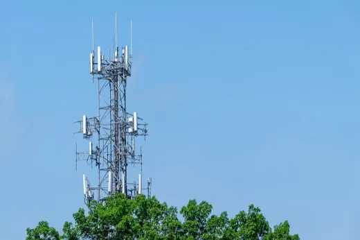
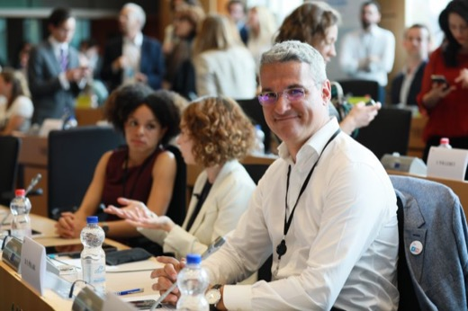
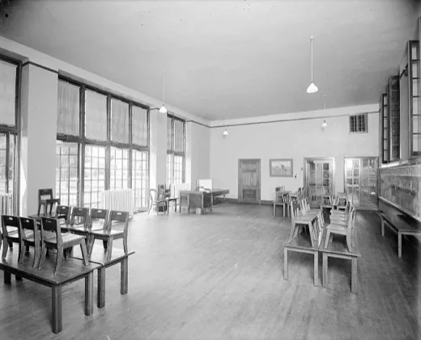
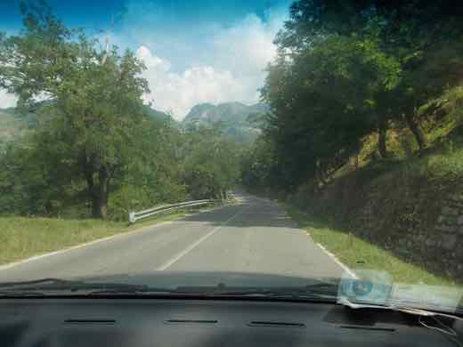
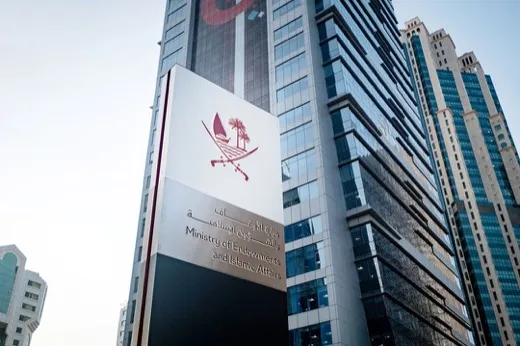
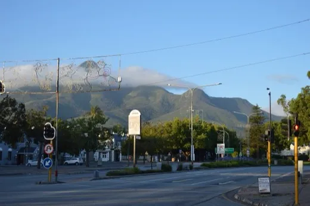
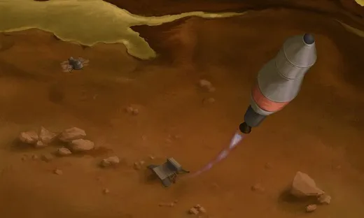
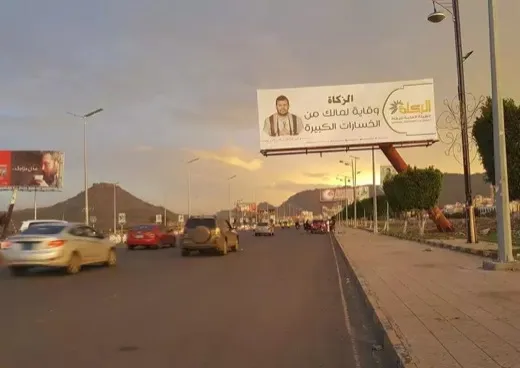
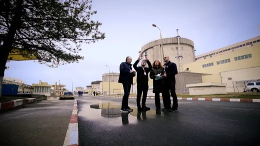
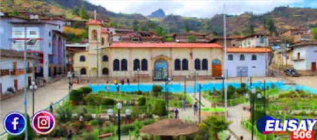

✅ Probat
Afirmații susținute de dovezi verificabile. Sursele sunt lângă fiecare, ca să le puteți controla singuri.
771 verificări, cele mai noi întâi. Vezi și: ❌ Contrazis · ⚠️ Contestat · 🔍 În verificare

60 de percheziții în Neamț, Iași și Suceava într-un dosar DIICOT de contrabandă cu țigări
Polițiști ai Serviciului de Combatere a Criminalității Organizate Neamț și procurori DIICOT au făcut, joi, 13 august 2026, 60 de percheziții domiciliare…

BNR: deficitul de cont curent a urcat la 14,2 miliarde euro în S1 2026, investițiile străine directe au scăzut cu 82%
Banca Națională a României a publicat pe 14 august 2026 balanța de plăți pentru ianuarie-iunie 2026: deficit de cont curent de 14,202 mld. €, investiții…
SUA: DOJ cere retragerea cetățeniei pentru 25 de americani naturalizați, cea mai amplă acțiune de denaturalizare din istorie
Între 20 iulie și 3 august 2026, DOJ a depus acțiuni civile de denaturalizare împotriva a 25 de persoane din 17 țări, acuzate că au ascuns fapte grave la…

Digi Communications: venituri de 1,2 miliarde de euro în S1 2026, dar pierdere netă de 45,9 milioane de euro
Digi Communications a raportat pe 14 august 2026 venituri consolidate de 1,2 miliarde de euro în S1 2026 (+10% față de S1 2025), dar și o pierdere netă de…

Dronă prăbușită lângă Luncavița, Tulcea: explozie și incendiu la 5 km de granița cu Ucraina — al treilea incident aerian în 24 de ore
Vineri, 14 august 2026, o dronă neidentificată s-a prăbușit lângă Luncavița, Tulcea, la 5 km de Ucraina, provocând o explozie și un incendiu de vegetație…

PNRR: Guvernul anunță finalizarea Cererii de plată nr. 5, de 2,84 miliarde de euro — dar sursele nu coincid dacă a fost și depusă oficial
Ministrul Dragoș Pîslaru a anunțat pe 14 august 2026 finalizarea Cererii de plată nr. 5 din PNRR, în valoare de 2,84 miliarde de euro (1,65 mld. granturi +…
Ferran Torres, aproape de PSG: acord de circa 50 de milioane de euro cu Barcelona, dar transferul rămâne condiționat de vizita medicală
Paris Saint-Germain și FC Barcelona au ajuns la un acord verbal pentru transferul atacantului spaniol Ferran Torres, în schimbul a aproximativ 50 de milioane…

Guvernul deblochează 768 de posturi pentru personalul creșelor construite prin PNRR, pentru aproape 4.500 de locuri noi pentru copii
În ședința de vineri, 14 august 2026, Guvernul a aprobat un memorandum pentru deblocarea a 768 de posturi la 34 de creșe nou-construite (26 finanțate din…

Dragajul de pe Dunăre nu a dat rezultatul scontat la Cernavodă — Bolojan anunță un proiect pe termen lung, Bala 2
Ministra interimară a Mediului, Diana Buzoianu, a declarat (10-12 august 2026) că estimarea inițială — că lucrările de dragaj ar putea asigura funcționarea…

Incendii noi forțează evacuări masive în Franța și Germania, în plin val de căldură european
Un incendiu izbucnit joi la Luglon (Landes, sud-vestul Franței) a ars peste 1.100 hectare și a dus la evacuarea a circa 525 de oameni; prefectura descrie…

Guvernul relansează exploatarea de grafit de la Baia de Fier (Gorj) — ce se decide acum și ce urmează până în 2028
Guvernul a pus pe ordinea de zi a ședinței de vineri, 14 august 2026, un proiect de hotărâre care anulează decizia anterioară de închidere definitivă a…

Cutremurul din Columbia: bilanțul urcă la 281 de morți, peste 12.000 de case distruse — fereastra de salvare se închide
🌍 Cutremurul de 7,4 grade din 10 august 2026, cel mai puternic din Columbia în acest secol, a ucis cel puțin 281 de oameni și a distrus peste 12.000 de…

Gimnastică: România, locul 11 la Europenele de la Zagreb — Sabrina Voinea, scoasă din finala de la bârnă după o contestație a propriei antrenoare
Echipa feminină de gimnastică a României a încheiat calificările Campionatului European de la Zagreb pe locul 11, fără nicio calificare individuală în finale…

INS: economia României a stagnat în trimestrul 2 din 2026, după ce a scăzut cu 0,8% în primul semestru
Institutul Național de Statistică a publicat, pe 14 august 2026, estimările „semnal” pentru trimestrul 2: PIB-ul a stagnat față de trimestrul 1, dar rămâne…
Șefii apărării din România și Ungaria s-au întâlnit la București pentru a consolida cooperarea militară bilaterală
Șeful Statului Major al Apărării României, generalul Gheorghiță Vlad, s-a întâlnit la București, pe 13 august 2026, cu omologul maghiar, generalul Zsolt…
Ucraina a lovit rafinăria Gazprom din Salavat, la 1.300 km de graniță — cel mai adânc atac recent în teritoriul rus
În noaptea de 12 spre 13 august 2026, forțele ucrainene au lovit complexul de rafinare-petrochimie Gazprom Neftekhim Salavat, în Bashkortostan, la…

Explozie la uzina de muniție KNDS din Colleferro, lângă Roma — fără victime, cauza exactă e în anchetă
Joi, 13 august 2026, o explozie puternică a lovit uzina de muniție KNDS Ammo Italy din Colleferro, la circa 40-60 km sud-est de Roma; nu au fost raportate…

SpaceX a exclus Polonia din roaming-ul Starlink european, apoi a revenit după amenințarea cu retragerea celor 50 milioane dolari pentru Ucraina
SpaceX a exclus Polonia din zona sa europeană de roaming Starlink, fără explicație publică. După ce miniștri polonezi au amenințat cu reconsiderarea celor 50…
Comunitatea românilor din Spania riscă să scadă sub 500.000 pentru prima dată din 2006, arată datele oficiale spaniole
Potrivit datelor provizorii ale Institutului Național de Statistică al Spaniei (INE), 5.300 de români au părăsit Spania doar în trimestrul al doilea din…

O dronă a intrat în spațiul aerian al Letoniei și a fost doborâtă de avioane NATO — a doua interceptare de acest fel din 2026
Vineri, 14 august 2026, o dronă a intrat în spațiul aerian al Letoniei, în regiunea Balvi, și a fost doborâtă de avioane NATO; armata letonă spune că a fost…

Sorin Grindeanu, varianta PSD pentru șefia Guvernului — dar UDMR nu s-a angajat încă, iar Nicușor Dan nu a desemnat pe nimeni
După demiterea guvernului Bolojan, PSD susține varianta Sorin Grindeanu pentru șefia unui nou Guvern, iar consultările oficiale la Cotroceni sunt așteptate…

Farage a demisionat din Parlament pe fondul scrutinului privind un cadou de 5 milioane de lire, apoi candidează din nou azi la Clacton
Nigel Farage a demisionat din Parlamentul britanic în iulie 2026, pe fondul scrutinului privind un cadou personal de 5 milioane de lire de la un miliardar…

CCR amână până pe 23 septembrie conflictul Guvern–ÎCCJ pe restanțele de 4,8 miliarde lei ale magistraților
Curtea Constituțională a amânat pentru 23 septembrie 2026 decizia în conflictul juridic dintre Guvern și Înalta Curte de Casație și Justiție, pe tema unor…

Grindeanu spune că „Bolojan se împrumută cu 1.000 de euro pe secundă” — cifra e reală, atribuirea exclusivă nu
La bilanțul de 100 de zile de la demiterea guvernului Bolojan, liderul PSD Sorin Grindeanu a spus că „premierul demis Bolojan se împrumută cu 1.000 de euro…
Bursa de Valori București a avut cel mai bun prim semestru din istoria sa: profit individual de 17 milioane lei
Bursa de Valori București (BVB) a raportat, pe 13 august 2026, un profit net individual de 17 milioane lei în primele șase luni din 2026 — cel mai bun prim…
Consiliul Kennedy Center votează repunerea numelui lui Trump pe clădire și închiderea pentru doi ani de renovări
Consiliul de administrație al Kennedy Center — numit integral de Donald Trump — a votat, joi, 13 august 2026, cu 20 la 3, redenumirea instituției cu numele…

Portavionul USS George Washington pleacă spre Orientul Mijlociu să-l înlocuiască pe USS Abraham Lincoln, în timp ce apar relatări despre condiții proaste la bord
USS George Washington a pornit din Pacific spre Orientul Mijlociu pentru a-l înlocui pe USS Abraham Lincoln, aflat de peste 250 de zile în misiune (peste 200…

Un judecător federal respinge procesul administrației Trump împotriva Harvard privind antisemitismul
Judecătorul federal Richard Stearns, din Boston, a respins pe 13 august 2026 procesul prin care administrația Trump acuza Harvard de „indiferență deliberată”…
Trei luni după drona explodată în Portul Constanța: Miruță spune că România și Ucraina comunică acum „aproape în timp real”
Vicepremierul și ministru interimar al Apărării, Radu Miruță, a declarat pe 13 august 2026 că, după ce o dronă navală ucraineană a explodat în Portul…

CET Titan: 289 de milioane de lei pentru prima centrală de termoficare construită de la zero în București din 1979
CEC Bank și Exim Banca Românească au semnat, pe 13 august 2026, un contract de finanțare de circa 289 de milioane de lei pentru CET Titan — centrala pe care…
Guvernul australian și statul New South Wales dau 2,5 miliarde de dolari australieni pentru a salva cea mai mare topitorie de aluminiu din țară
Pe 12 august 2026, premierul australian Anthony Albanese a anunțat un pachet de salvare de circa 2,5 miliarde de dolari australieni pentru topitoria de…
Premierul neozeelandez Christopher Luxon supraviețuiește unui vot de încredere în propriul partid, după o provocare de conducere a lui Chris Penk
Pe 12 august 2026, ministrul apărării Chris Penk a lansat o provocare de conducere împotriva premierului Christopher Luxon, într-o ședință închisă a grupului…

O bombă ascunsă într-un tomberon ucide un ofițer rus în Sevastopolul ocupat — FSB acuză Ucraina, identitatea victimei rămâne neconfirmată oficial
🌍 Un dispozitiv exploziv ascuns într-un tomberon a ucis joi dimineață un militar rus pe o stradă din Sevastopolul ocupat, spune FSB. Serviciul rus de…
Explozie la rafinăria Gunvor din portul Rotterdam: un mort, mai mulți răniți — cauza, încă neconfirmată oficial
🌍 O explozie a avut loc joi dimineață la terminalul Gunvor Energy din Europoort, cea mai mare zonă industrială a portului Rotterdam. Gunvor confirmă un mort…

Eurostat: România și Luxemburg au cel mai sever declin al producției industriale din UE, în iunie 2026
Producția industrială a scăzut în iunie 2026 cu 5,6% în România față de iunie 2025 — al doilea cel mai sever declin anual din UE, după Luxemburg (-7,9%) și…

David Popovici, cel mai bun timp din semifinalele la 200m liber — se califică în finala de vineri, la Campionatele Europene de la Paris
David Popovici a înotat 1:44,56 în semifinala 200m liber de joi, 13 august, cel mai bun timp din toate cele 16 semifinaliste — cu o zi înainte câștigase…

Ciocniri Houthi–forțe guvernamentale în Taiz, Yemen — ONU avertizează asupra celui mai mare risc de reluare a războiului civil de la armistițiul din 2022
🌍 Forțele guvernamentale yemenite spun că au respins un atac Houthi în provincia Taiz, în noaptea de miercuri spre joi, în timp ce ciocnirile se extind pe…

Isărescu: România nu îndeplinește în prezent niciun criteriu pentru trecerea la euro
Guvernatorul BNR a declarat pe 13 august 2026, la prezentarea Raportului asupra inflației, că România „nu are niciun criteriu îndeplinit” pentru adoptarea…

Canada se pregătește pentru tarife americane de 50% de la 19 august — Carney: „toate opțiunile sunt pe masă”
De la 19 august 2026, SUA urmează să impună tarife de 50% pe o serie de produse canadiene — alcool, lactate, ciment, materiale de construcție și altele —…

Administrația Trump plănuiește cel puțin 900 de milioane $ pe construcții la Casa Albă — o curte de apel spune că are nevoie de aprobarea Congresului
Administrația Trump plănuiește să cheltuiască cel puțin 900 de milioane de dolari pe construcții la Casa Albă — sală de bal, heliport, renovarea Aripii de…
Casa Verde 2026 renunță la panouri fotovoltaice: banii merg doar spre baterii de stocare
Ministra Mediului, Apelor și Pădurilor, Diana Buzoianu, a anunțat la Euronews că programul Casa Verde din 2026 nu va mai finanța instalarea de panouri…

Fragment de dronă găsit în mare la Costinești, plaja evacuată — MApN: fără risc pirotehnic
Turiști au filmat joi dimineață, 13 august 2026, un obiect plutind în mare la Costinești, identificat ulterior ca fragment de dronă. Poliția, Jandarmeria…

Polonia anunță că a dejucat „în ultimul moment” un asasinat la Varșovia, comandat de Rusia asupra unui cetățean americano-ucrainean
Premierul polonez Donald Tusk a anunțat pe 13 august 2026 că serviciile de securitate au reținut, pe 7 august, un cetățean rus acuzat că fusese recrutat de…

Inflația din SUA scade ușor la 3,4% în iulie, al doilea declin lunar la rând
🌍 Indicele prețurilor de consum din SUA a crescut 0,1% în iulie față de iunie, iar rata anuală a scăzut la 3,4% (de la 3,5% în iunie), potrivit datelor…

Guvernul reduce acciza la motorină cu 20% între 16 și 31 august
Ministerul Finanțelor a anunțat pe 13 august 2026 o reducere temporară de 20% a accizei la motorina standard, în perioada 16-31 august, invocând o creștere…
Val de căldură lovește rețelele electrice din Franța și Germania: nuclear redus, eolian în cădere, prețuri duble
Al cincilea val de căldură al verii 2026 a forțat EDF să reducă producția nucleară franceză, iar vântul slab a tăiat producția eoliană germană cu circa 60%…

Bolojan cere mobilizare totală: peste 4.500 de proiecte PNRR riscă să rateze termenul de 31 august
Premierul interimar Ilie Bolojan a cerut miniștrilor și prefecților, într-o discuție pe 13 august 2026, mobilizare totală: peste 4.500 din cele 15.000+ de…
Franța își extinde „umbrela nucleară” spre nouă state europene; România, printre țările invitate la discuții
Președintele francez Emmanuel Macron a anunțat pe 2 martie 2026 că Franța își va mări arsenalul nuclear și va permite desfășurarea temporară a aviației sale…

BNR a urcat prognoza de inflație la 6,1% pentru finalul lui 2026 — Isărescu dă vina pe secetă, caniculă și energie
Banca Națională a României a anunțat pe 13 august 2026 o nouă revizuire în creștere a prognozei de inflație pentru finalul anului — de la 5,5% la 6,1% —…

O dronă Shahed cu reacție a lovit locomotiva unui tren cu 340 de pasageri în regiunea Odesa — mecanicul și asistentul lui au murit
În dimineața de 13 august 2026, o dronă rusească Shahed cu motor cu reacție a lovit locomotiva unui tren de călători din regiunea Odesa, ucigând mecanicul și…

Economia britanică a încetinit la 0,4% în trimestrul 2 din 2026, pe fondul efectelor războiului din Iran
Oficiul Național de Statistică al Marii Britanii (ONS) a raportat pe 13 august 2026 o creștere de 0,4% a PIB-ului în trimestrul al doilea din 2026, sub cei…
Karoline Leavitt pleacă de la Casa Albă la finalul lunii august — motivul invocat: copiii
Donald Trump a anunțat pe 12 august 2026 că Karoline Leavitt, purtătoarea de cuvânt a Casei Albe, își încheie mandatul la finalul lunii, invocând nevoia de a…

NATO: Rusia poartă „întreaga răspundere” pentru încălcările spațiului aerian din Polonia și România
Consiliul Nord-Atlantic, reunit pe 12 august 2026 la nivel de ambasadori, a declarat că Rusia „poartă întreaga răspundere” pentru incidentele aeriene din…

UE caută alternative la Visa și Mastercard: euro digital, „Wero” și suveranitate financiară
Cu Visa și Mastercard procesând circa 61% din plățile cu cardul din zona euro, UE grăbește euro digital (aprobare finală vizată pentru finalul lui 2026…

Netanyahu respinge planul de 15 puncte al „Board of Peace” pentru Gaza — cere „dezarmare reală, nu fictivă” a Hamas
Duminică, 9 august 2026, premierul israelian Benjamin Netanyahu a declarat că Israelul respinge documentul de 15 puncte propus de „Board of Peace”…

S-a confirmat: Unitatea 2 de la Cernavodă s-a oprit azi — și un diferend nou despre lucrările de dragare de pe Dunăre
Nuclearelectrica anunțase pe 11 august doar „posibilitatea” opririi Unității 2 de la Cernavodă. Azi, 13 august 2026, oprirea s-a confirmat: manevrele au…

O țintă aeriană a intrat în spațiul românesc lângă Chilia — RO-Alert în nordul Tulcei, două F-16 ridicate de la sol
În noaptea de 12 spre 13 august 2026, radarele au detectat 5 ținte aeriene lângă Ismail (Ucraina); una a intrat în spațiul aerian românesc lângă Pardina, a…

489.826 de hectare arse în UE de la începutul anului — al patrulea cel mai negru bilanț din 2012 încoace
La începutul lunii august 2026, incendiile de vegetație din Uniunea Europeană au ars deja 489.826 de hectare — al patrulea cel mai mare total din 2012…

România, cel mai bun parcurs din ultimele decenii la baschet U16 — oprită de Franța în sferturi, 69-108
Naționala masculină U16 a României, gazdă a FIBA U16 EuroBasket 2026 la Oradea, a fost eliminată în sferturile de finală de Franța, 69-108, pe 12 august 2026…

UNICEF: circa 300 de copii uciși în Gaza în cele 300 de zile de la armistițiu. Ce spune, și ce nu spune, raportul
UNICEF a raportat, pe 6 august 2026, că în cele aproape 300 de zile de la armistițiul anunțat pe 10 octombrie 2025 între Israel și Hamas, aproximativ 300 de…